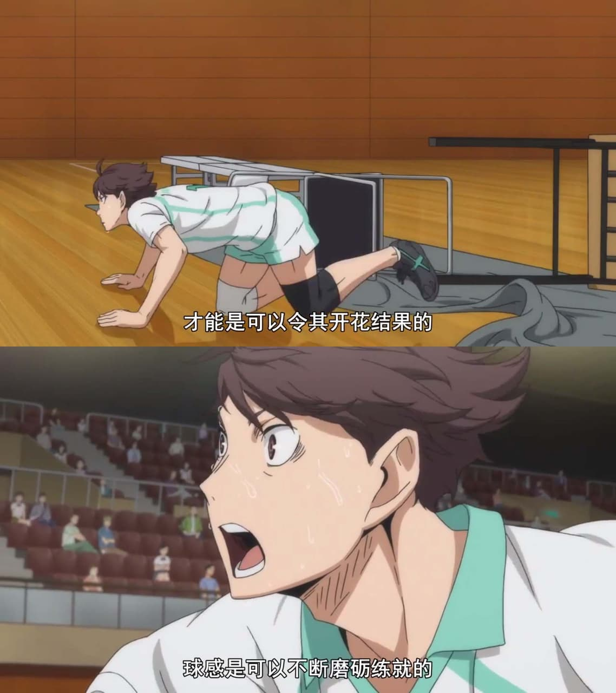

角色經歷
青葉城西高校排球部的主將，北川第一中學出身。小時候因為一場阿根廷對日本的比賽成為了阿根廷國家隊前二傳手何塞·布蘭科的粉絲，決心成為像他一樣出色的二傳手。
自小學開始打排球，影山飛雄中學時期的前輩，認為他「愛捉弄人」。影山的發球是憑觀察他而學會。座右銘是「要打就要打到對方站不起來為止」
與巖泉一為兒時玩伴，彼此有超乎尋常的信賴關係，暱稱對方為巖醬。也是讓及川理解到「六個人」的重要性的人，在初三時，及川因為天賦強大的牛若連續三年都被他打敗，那時身為他學弟的影山想請教他發球
，但此時的及川知道影山也是天賦極高的天才，差點就對影山動手了好在巖泉一及時打醒了他。
曾一度因為要不要繼續打排球的事情迷茫過，但在從阿根廷來到日本V聯盟“立花Red Falcons”球隊擔任教練的阿根廷國家隊前任二傳手“何塞·布蘭科”的一番教導後，讓及川認識到“這些所謂的怨言，等自己拼盡全力之後再説也不遲，與其哀嘆自己的才能比不上人家，不如相信自己的能力不止如此，哪怕前面的道路很艱辛”，下定決心為了自己的排球夢而繼續努力。
中學3年級時在宮城縣市民體育大會排球競技男子賽中得到最佳二傳手獎。在北川第一中學時對抗白鳥澤學院中學（因為初中時“怪童”牛島若利加入了白鳥澤學園初中部）始終屈居第二，希望可以一雪前恥。
在面對牛島若利和影山飛雄兩個天賦比他高的天才時，從未服輸過，尤其是面對影山時，想過“飛雄，也許我會輸給急速進化的你吧，不過並不是在今天。”
因為是“球場上的王者”影山的學長而被日向稱為"大王"。
阿根廷排球聯賽“CA聖胡安”排球俱樂部二傳手。2020年東京奧運會阿根廷國家男子排球隊成員，擔任二傳手，也終於成為了超越天才們的頂尖選手。
我很喜歡粉絲評論及川說過的一句話，
「雖然世界沒有發現及川徹，但及川徹自己走向了世界。」
角色名言
「面對快速進步的你，我可能會輸也不一定，但是，絕不是在今天。」
前兩季動畫將重點放在「青葉城西」（簡稱青城）這支隊伍，及川雖然是影山的高中學長，卻也是彼此心中最大的對手，同為舉球員的他們，一位是縣內No.1，一位是球場上的國王，兩人首次在正式比賽中交手，此時及川的球技、成熟度都遠高於影山，但他也知道，總有一天這個「天才學弟」將會緊追在後。
「才華是可以栽培開花的 ，靈感是可以研磨雕琢的。」
及川的超～經典場面，看過的人不是全身雞皮疙瘩就是淚流滿面，這是烏野對上青城的第二戰，在這裡，雖然及川帶領的青城敗北，但這段我相信是排球迷永生難忘的一段。
「如果認為自己沒有才能，那大概一輩子都不會有了。」
